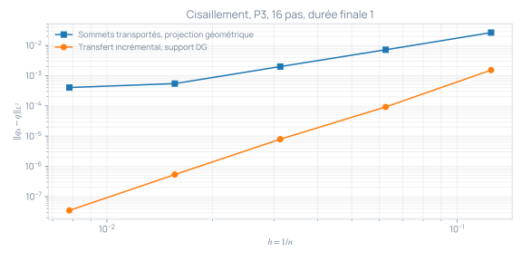
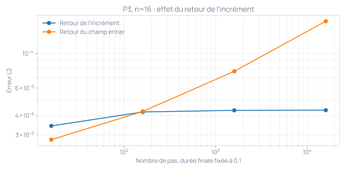

Complément au rapport de nuit. Généré le 16/11/2026 à 09:25, heure de Paris. Les résultats ci-dessous concernent un nouvel algorithme, implémenté après la campagne initiale.
Le champ reste représenté dans les éléments finis triangulaires. Un support cartésien DG auxiliaire reçoit une projection L2 du champ, effectue le transport, puis retourne seulement l'incrément. Les échanges FE–support sont des projections adjointes préassemblées par intersection statique. Aucun ajustement global de moments ni intersection de cellules transportées n'intervient pendant les pas de cette variante.
T = I + R* (S − I) R, avec R la projection FE vers le support et R* son adjoint de masse.
Si R est contractant et préserve la constante, et si S conserve la masse, la constante et la norme L2 au sens large, le transfert T conserve la masse et la constante et est contractant. Il vaut exactement l'identité lorsque S vaut l'identité. La note incremental_theory.pdf donne une preuve et la décomposition de la dissipation. Le transfert est linéaire et ne comporte pas de limiteur dépendant du champ.
Ces hypothèses sont réalisées par le prototype pour la translation et le cisaillement horizontal incompressible, en double précision sur RTX 5090. Les projections statiques couplent des triangles affines Pp à des carrés Qp ; le transport auxiliaire est une projection DG 1D par ligne de noeuds de Gauss, puis par colonne pour la translation 2D. La vitesse peut varier non linéairement entre les lignes dans le cas du cisaillement.
73 cas enregistrés, 0 échecs d'exécution. Les six validations combinent P1, P2, P3 et deux résolutions auxiliaires. Elles comprennent une seconde quadrature des intersections, les moments exacts de Gauss, l'adjoint comparé à une matrice dense indépendante, les constantes, la masse, la contraction de R et 48 SVD des transferts complets, dont les identités à pas nul.
| Degré | H = h / facteur | Norme R | Noyau minimal | Norme T, max. |
|---|---|---|---|---|
| 1 | 1 | 1 | 32 | 1 |
| 1 | 2 | 1 | 0 | 1 |
| 2 | 1 | 1 | 48 | 1 |
| 2 | 2 | 1 | 0 | 1 |
| 3 | 1 | 1 | 64 | 1 |
| 3 | 2 | 1 | 0 | 1 |
Compute Sanitizer : ========= ERROR SUMMARY: 0 errors

| n | Erreur géométrique | Erreur incrémentale | Rapport erreurs | Défaut masse |
|---|---|---|---|---|
| 8 | 0.02649 | 0.001525 | 17.36 | 4.441e-16 |
| 16 | 0.00717 | 9.207e-05 | 77.87 | 6.661e-16 |
| 32 | 0.001995 | 7.893e-06 | 252.7 | 9.992e-16 |
| 64 | 0.0005453 | 5.333e-07 | 1023 | 6.661e-16 |
| 128 | 0.0004042 | 3.469e-08 | 1.165e+04 | 1.221e-15 |
Le dernier taux de raffinement P3 est 3.942. Les erreurs sont intégrées avec la quadrature indépendante de degré 18. Cette amélioration corrige principalement la limitation géométrique de la référence sur ce flot ; elle ne mesure pas un gain face à toutes les méthodes SLDG utilisant une géométrie courbe d'ordre élevé.

| Degré | Facteur | Pas | Erreur L2 | Défaut masse | Énergie finale / initiale |
|---|---|---|---|---|---|
| 2 | 1 | 10000 | 7.162e-05 | 1.035e-12 | 1 |
| 2 | 2 | 10000 | 7.618e-05 | 9.344e-13 | 1 |
| 3 | 1 | 10000 | 3.258e-06 | 6.684e-14 | 1 |
| 3 | 2 | 10000 | 3.355e-06 | 2.072e-12 | 1 |
Le temps long correspond à une translation pendant 10 unités de temps, avec 10 000 pas et n=32. Les différences à l'arrondi ne sont pas corrigées par un rétablissement global de masse ou une renormalisation d'énergie.
À résolution égale et degré égal, l'espace cartésien possède moins de degrés de liberté que l'espace triangulaire. Certains modes FE appartiennent nécessairement au noyau de R et restent immobiles sous T. Les SVD avec un support deux fois plus fin dans chaque direction ne détectent plus ce noyau sur les petits maillages testés. Le choix du support fait donc partie de la méthode ; le théorème d'énergie ne suffit pas à le choisir.
| Facteur | Erreur L2 | Couplage (Mo) | Préassemblage (s) | Application (ms) |
|---|---|---|---|---|
| 1 | 5.333e-07 | 41.9 | 0.07861 | 0.1011 |
| 2 | 5.308e-07 | 78.6 | 0.09198 | 0.1131 |
| 3 | 5.169e-07 | 125.8 | 0.109 | 0.2041 |
Les applications sont chronométrées par événements CUDA après échauffement, avec allocations du prototype et lancements Python. Le préassemblage statique est mesuré séparément et peut inclure des coûts de cache. Aucune accélération globale face à un solveur eulérien GPU n'est établie. Pour une vitesse variable, les poids du transport auxiliaire changent, mais les couplages entre maillages restent réutilisables.
La construction donne maintenant un algorithme linéaire exécuté sur GPU, une preuve conditionnelle de conservation et de contraction, l'identité à déplacement nul et des résultats d'ordre élevé sur un flot non affine. Il reste à démontrer une borne de consistance uniforme, traiter les modes mal résolus par le support et construire un transport auxiliaire adapté aux vitesses FE générales. Les frontières, la compressibilité et le calcul distribué ne sont pas implémentés dans cette variante.
Le retour d'incréments a des antécédents dans FLIP ; les projections de masse conservatives et stables sont également établies. Une nouveauté ne peut pas être revendiquée sur ces seuls ingrédients. Le positionnement doit porter sur leur réalisation FE statique, les propriétés de l'opérateur complet, le contrôle du support et le coût à erreur fixée. La preuve et les références sont jointes dans incremental_theory.pdf.
Duque et Español, Assignment of fields from particles to mesh ; Fluid Implicit Particles on Coadjoint Orbits.
Les bandes de quadrature adaptées aux faces rendent faisables les premiers cas de petit déplacement qui échouaient avec des points intérieurs fixes, mais le solveur complet de moments reste coûteux. La correction locale des Gram après équilibrage des seules masses assure des invariants mais a échoué au test de convergence : elle est conservée comme expérience rejetée. Une variante par flux caractéristiques aux faces donne aussi une bonne précision en cisaillement ; son contrôle d'énergie est non linéaire. Elle constitue une comparaison exploratoire distincte du transfert linéaire incrémental présenté ici.
Reproduction : python3 experiments/slfe/carrier_study.py --suite validation --output DIR, puis les suites convergence, small_steps, long_time et resolution. Les JSONL contiennent les paramètres, les versions et les empreintes SHA-256 des sources.